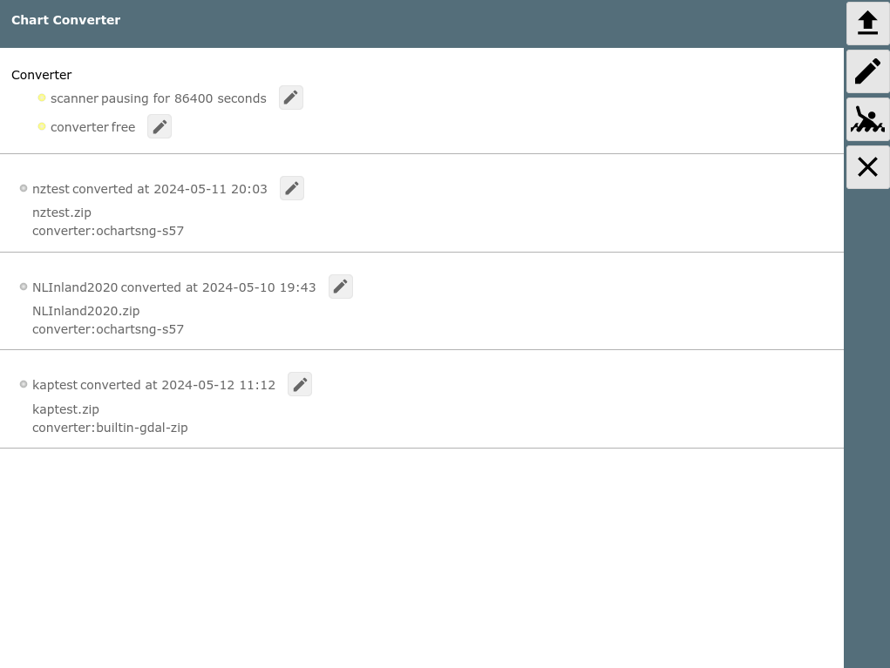
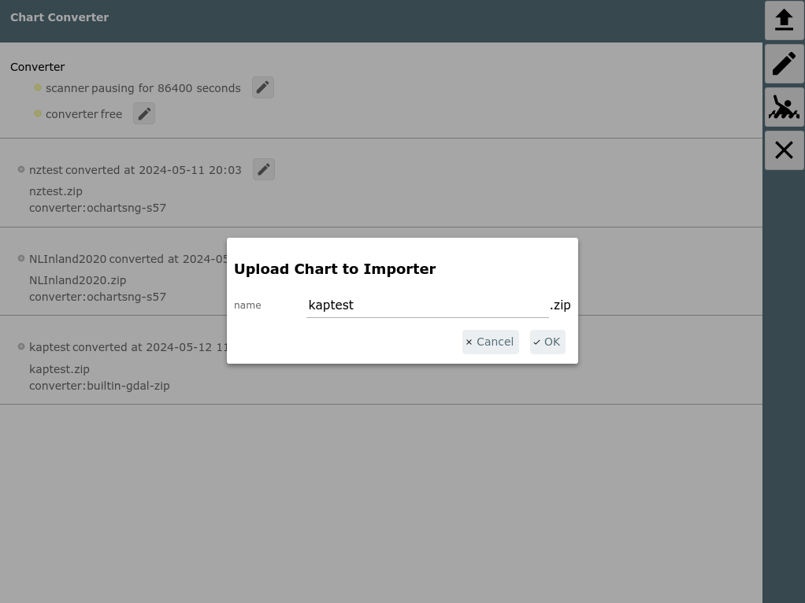
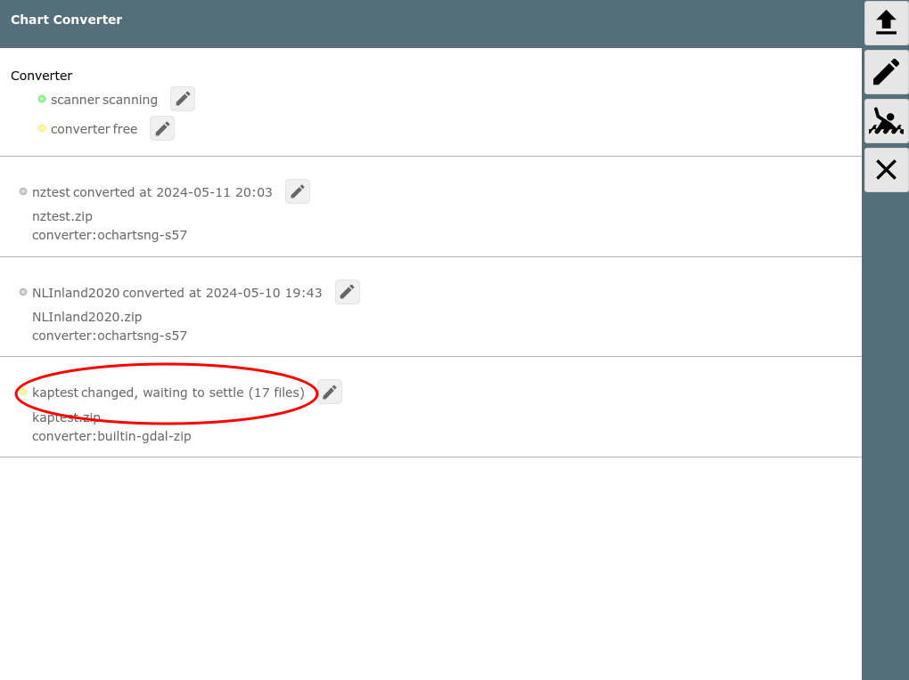
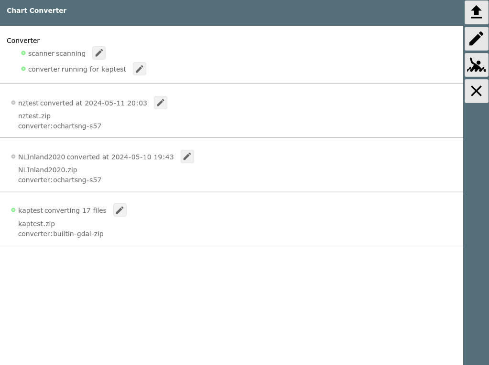

=== not on Android ===
Chart Types
The importer has converters (built in) for the following chart types:
- BSB charts (extension .kap) and zip archives with multiple .kap files
- mbitles files (but only with the default
coding, a different tile numbering is not supperted)
Normally you can use the mbtiles directly in AvNav without conversion. The only use case would be to convert to gemf for the usage on Android as gemf charts can be read from an external chart directory (e.g. SD card) but mbtiles can (on Android) only be read from the internal chart directory. - navipack files
Additionally plugins can add own converters - like the ochartsng plugin (zip's of S57 files).
Usage

The importer page can be reached from the Files/Download
page with the  Button.
Button.
When activated the page shows all currently known import
files/directories from the import dir (DATADIR/import). For each of them
a possible converter is shown if AvNav was able to find a suitable one.
In the picture above all files have already been (successfully)
converted.
When clicking on one of the files you will get a dialog with a couple of actions.
The visible actions depend on the status of the item (converted, currently converting,...).
| Button | Function |
| Delete | Delete the file/dir at the import directory. Converted charts are not deleted. |
| Disable | Disable the item in the import directory. No new conversion will be tried even if you update the item (e.g. upload new files to a sub directory). |
| Restart | Restart the conversion. |
| Download (only when done) |
Download the converted chart. For the internal converters this will always be a gemf file, for others it depends on the plugin that provides the conversion. |
| Log | Get the last (or current) conversion log file |
| Stop (only when running) |
Interrupt a currently running conversion. |
The result of the conversion is stored in the AvNav charts directory or
in the appropriate plugin chart directory.
With a click on the  button you can select a file to upload
(.kap file, .zip file with .kap files, .navipack, .mbtiles,...).
button you can select a file to upload
(.kap file, .zip file with .kap files, .navipack, .mbtiles,...).

In the dialog you can choose a name for the file as it should appear in
the converter (this will also later on be used as the name of the gemf
file).
When you upload a single .kap file the importer will allow you to use a
"set name" (i.e. a directory in the importer directory).
This way you can upload multiple .kap files that will form a single
gemf chart with the name of the set file.
But typically it's more convenient to package the kap files into a zip
and upload this.
After uploading the importer will still wait some time to ensure that all files have been uploaded.
Once the importer did not detect changes for one file/directory any more it will start the conversion.

You can view the log after clicking the  button beside the entry or at the
converter. After the conversion is finished the result is presented. If
there are errors you can check the log for problems.
button beside the entry or at the
converter. After the conversion is finished the result is presented. If
there are errors you can check the log for problems.
When the conversion has been successful the converted chart should immediately be available for use in AvNav. If you want to transfer the chart to another system (maybe you just run the conversion on a desktop and now you would like to use the chart on a raspberry pi or on android) you can use the download button as described above.
With the  button
at the right side you reach the property dialog for the importer.
button
at the right side you reach the property dialog for the importer.